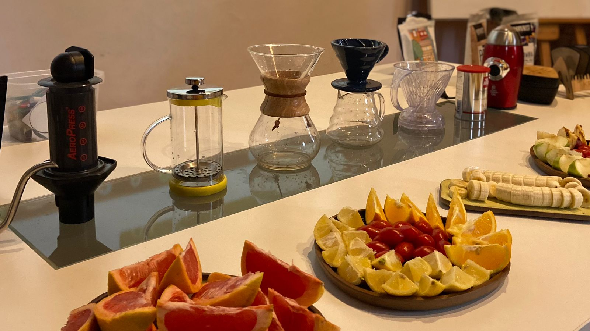
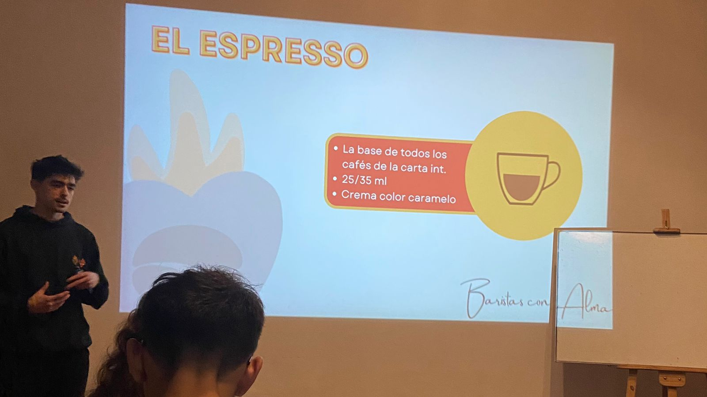

El Curso de Barista Inicial esta enfocado al servicio de gastronomia,
esta creado meticulosamente para poder abarcar el mayor tiempo en
practicar las tecnicas de preparacion de las bebidas.
Los temas que se ven en este curso son:
El Barista.
Botanica.
Historia del cafe.
Latter Art.
Espresso.
Beneficios y Tueste.
Metodos de Extraccion.
Carta Internacional.
Venta Sugerida y Tendencias.
Bebidas adicionales.
LImpieza y mantenimiento de equipamiento.

